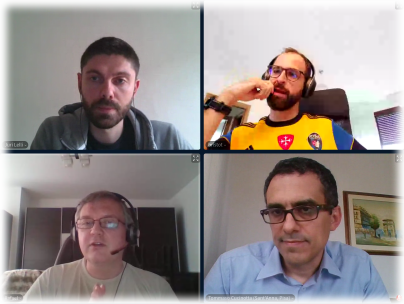

The deadline scheduler and CPU idle states
Why would one even bother to try to combine the deadline scheduler and CPU idle states? One should never miss opportunities to save energy, he said. Plus, on some systems, avoiding idle states is not really an option; without them, the CPU will overheat and thermal throttling will kick in. Meanwhile, the combination seems viable to him. In theory, at least, all of the information needed to select idle states is present; the scheduler has work estimates and deadlines for all tasks, and it has the idle-state properties for the CPU. It's just a matter of using that information correctly.
His idea is to maintain a global latency quality-of-service request that depends on all deadline tasks in the system. That will show that, sometimes, there is no room for idle states; if enough deadline tasks have been admitted to use all of the available CPU time, the CPU clearly cannot go idle. But other times there will be some room. He proposed two rules to govern transitions into idle states:
- The latency limit cannot exceed the difference between the next deadline for any task and its runtime. If a task has 2ms worth of work to do by a deadline 5ms from now, nothing can impose a latency greater than 3ms.
- That limit, when multiplied by the number of deadline tasks, cannot exceed the amount of run time available after all deadline run-time reservations have been subtracted. In other words, the system cannot lose more CPU time to exit latency than it would have left over if all deadline tasks use their full reservation.
Juri Lelli said that the basic idea makes sense. Daniel Bristot de Oliveira, instead, said that while the first rule makes sense, the second is too pessimistic. Not all wakeups will happen on an idle CPU, so the exit-latency penalty will not always have to be paid. With the SCHED_FIFO realtime class, you know about the maximum latency for any given task, but that is not true for deadline tasks, which have no latency guarantees. Some delay for a deadline task at wakeup time is acceptable as long as it still makes its deadline.

One complication, Wysocki said, is that the processor may have to go into the C1 idle state every so often, regardless of what the operating system would want to have happen. That led to some discussion about how the forced C1 time could maybe be modeled; Tommaso Cucinotta suggested that it could be set up as a special deadline task of its own, at which point the scheduler's admission control policy could account for it. Wysocki thought it was an interesting idea, but he would still like to address the possibility of opportunistically going idle for additional time if the workload allows it.
Lelli pointed out that the scheduler reserves some time for non-realtime tasks now to be sure that they can run at least a little bit. Perhaps something similar could be done to reserve time for the idle thread? Cucinotta said that this idling would have to happen at the right time. Lelli said that it may be necessary to synchronize idle times across CPUs as well, but Wysocki said he is not thinking about deeper idle states or idling entire packages at this time.
Lelli asked if there were patches to look at now; Wysocki said that he hasn't done any real work yet. That is a good thing, since he learned things in this discussion that will influence what he eventually comes up with.
At this point Wysocki was finished, but the conversation continued. Dietmar Eggemann noted that, while admission control for deadline tasks is done globally, the actual scheduling of deadline tasks is done on a per-CPU basis. At which level, he asked, would idle time be taken into consideration? Bristot said that this division is an artifact of the difference between deadline-scheduling theory and the practice of an actual implementation. Cucinotta said that it's always possible to partition the system to move the admission-control decisions downward.
From there the discussion went deeply into deadline-scheduling theory; see
the recording, once it's available, for the details.
| Index entries for this article | |
|---|---|
| Kernel | Power management/cpuidle |
| Kernel | Realtime/Deadline scheduling |
| Kernel | Scheduler/Deadline scheduling |
| Conference | OS-Directed Power-Management Summit/2020 |